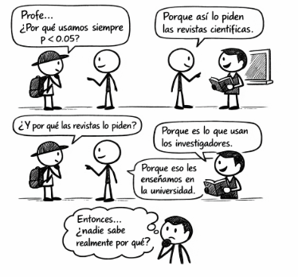
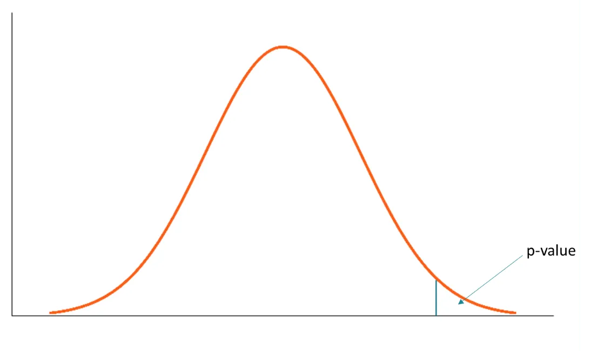
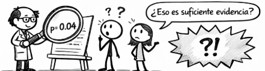

[1] -0.04710376
En muchas carreras científicas e ingenierías, la estadística se reduce a calcular valores p y compararlos con umbrales como p < 0.05, usándolos como un veredicto automático más que como parte de un razonamiento estadístico. Esto ha convertido al valor p en uno de los conceptos más malinterpretados de la estadística moderna, no por ser inútil, sino por su uso mecánico.

Frente a este problema, en 2016 la American Statistical Association (ASA) publicó la declaración “The ASA’s Statement on p-Values: Context, Process, and Purpose”, cuyo objetivo no fue prohibir los valores p, sino aclarar qué información entregan —y qué no— sobre los datos y las hipótesis, explicitando principios que rara vez se discuten en la enseñanza tradicional.
Este post explora esas ideas mediante simulaciones y ejemplos en R, mostrando el carácter arbitrario del umbral 0.05 y cómo ciertas prácticas comunes pueden inducir a conclusiones engañosas. Está dirigido a quienes buscan comprender la inferencia estadística más allá de recetas automáticas, poniendo énfasis en el contexto, el diseño y la interpretación crítica.
¿Qué es un valor p?

De manera informal, un valor p es la probabilidad de observar un resultado igual o más extremo que el obtenido, asumiendo que un modelo estadístico específico es verdadero. En la práctica, ese modelo suele corresponder a una hipótesis nula (por ejemplo, que no hay diferencia entre dos grupos o que el efecto es cero).
Es importante destacar desde el inicio qué no es un valor p: - No es la probabilidad de que la hipótesis nula sea verdadera. - No es la probabilidad de que los datos se deban al azar. - Es una probabilidad calculada condicionalmente al modelo asumido.
Para entender esto mejor, en lugar de quedarnos solo con la definición, usaremos una simulación simple.
Ejemplo: media muestral bajo la hipótesis nula
Supongamos que queremos evaluar si una muestra proviene de una población con media 0. Esa será nuestra hipótesis nula. Observamos una muestra y calculamos su media.
Luego preguntamos:
¿Qué tan raro es este valor si la media poblacional realmente fuera 0?
Ahora simulamos muchas muestras bajo la hipótesis nula (media = 0) y calculamos sus medias.
El valor p se obtiene contando cuántas de esas medias simuladas son tan extremas o más extremas que la observada.
Visualización de la distribución de valores p
{kind=link}
La línea roja representa la media observada.
El valor p corresponde al área de la distribución que queda tan lejos del centro como ese valor, bajo la hipótesis nula.
Un valor p no evalúa directamente la hipótesis, sino que responde a la pregunta:
Si el modelo asumido fuera correcto, ¿qué tan compatible es este resultado con lo que esperaríamos observar?
Esta distinción es fundamental y será clave para entender por qué los valores p suelen malinterpretarse cuando se usan como veredictos automáticos.
Principios sobre el uso e interpretación del valor p
La declaración de la ASA resume seis principios fundamentales sobre el valor p. En esta sección no los abordaremos de forma declarativa, sino que los exploraremos mediante ejemplos y simulaciones sencillas, para observar qué ocurre realmente cuando usamos valores p en distintos contextos.
1. El valor p mide incompatibilidad con un modelo, no con “la realidad”
Un valor p resume qué tan incompatibles son los datos observados con un modelo estadístico específico, usualmente asociado a una hipótesis nula (por ejemplo, “no hay efecto” o “no hay diferencia”).
Cuanto más pequeño es el valor p, mayor es la incompatibilidad entre los datos y el modelo asumido, siempre que las suposiciones del modelo sean razonables.
Aquí el valor p no nos dice si el efecto es “real” o “importante”, solo indica que los datos no encajan bien con el modelo que supone media cero.
2. El valor p NO es la probabilidad de que la hipótesis sea verdadera
Un error muy común es interpretar el valor p como una probabilidad de que la hipótesis nula sea cierta, o como la probabilidad de que los datos se deban “al azar”. El valor p no es ninguna de esas cosas.
Veamos cómo el mismo efecto produce valores p distintos según el tamaño muestral:
[1] 1.210714e-02 4.805056e-02 5.791167e-07 1.864167e-44El efecto es el mismo, pero el valor p cambia drásticamente.
3. No se debe decidir solo por si p cruza un umbral
Reglas automáticas como p < 0.05 reducen la inferencia científica a una decisión binaria artificial. No hay un salto cualitativo real entre p = 0.049 y p = 0.051.
{kind=link}
El valor p es solo una pieza dentro de un razonamiento estadístico más amplio.
4. La inferencia válida requiere transparencia completa
Seleccionar resultados basándose en valores p conduce a prácticas como p-hacking o cherry-picking, que inflan artificialmente la cantidad de resultados “significativos”.
{kind=link}
Sin información completa sobre qué se analizó y qué se reportó, los valores p pierden interpretabilidad.
5. El valor p no mide el tamaño ni la importancia del efecto
La significancia estadística no equivale a importancia científica, social o práctica.
Un efecto pequeño puede ser altamente “significativo”, mientras que uno grande puede no serlo.
6. Un valor p, por sí solo, no es buena evidencia
Un valor p aislado entrega información limitada. Un valor cercano a 0.05 ofrece solo evidencia débil, y un valor grande no constituye evidencia a favor de la hipótesis nula.

Por eso, el análisis estadístico no debería terminar en el cálculo de un valor p, sino complementarse con:
- estimaciones,
- intervalos,
- visualizaciones,
- conocimiento del fenómeno,
- y evidencia externa.
Conclusiones
El valor p es una herramienta útil para evaluar la compatibilidad entre los datos y un modelo estadístico, pero no mide la verdad de una hipótesis ni la importancia de un resultado. Su uso mecánico, especialmente mediante umbrales rígidos como p < 0.05, puede conducir a interpretaciones erróneas y decisiones poco fundamentadas.
Las ideas presentadas por la American Statistical Association (ASA) enfatizan que la inferencia estadística debe apoyarse en el contexto, el diseño del estudio y el razonamiento crítico, y no en reglas automáticas. Desde una perspectiva formativa, esto refuerza la necesidad de enseñar estadística más allá de recetas, promoviendo una comprensión profunda y reflexiva del análisis de datos.
📊 El problema no es usar valores p, sino enseñar estadística sin pensamiento estadístico.